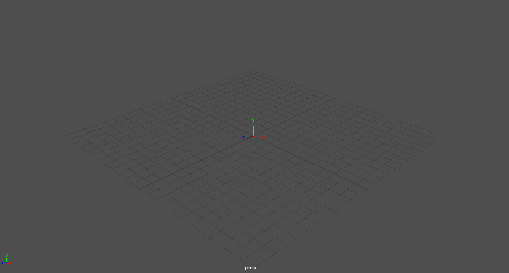
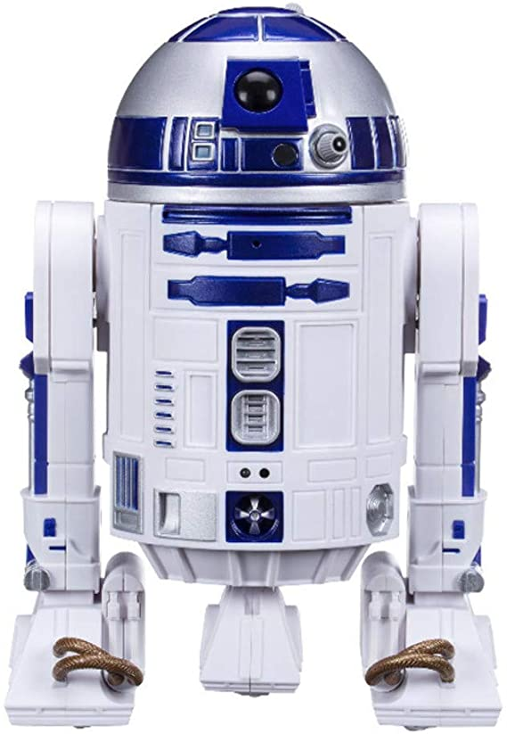

There are several places that you can start this journey depending on where you are in life. Free is quite often very nice, so if you're looking down that road and you’re not a student, then I would recommend the engine Blender. For what it’s worth, Blender is quite powerful though it does look quite daunting. If you are a student however there is another place that I have really enjoyed by the name of Maya. Maya is run by Autodesk and is free if you are a student. I do like the user face of Maya a little bit more because it looks cleaner. Here is what it looks like.
How do you even get from here to there? Well the answer is the basics. When you look at an image that you want to attempt to model the easiest way to start is to look for simple shapes. When you see this i mage, what do you see here? Personally I see a cylinder, a half sphere, and a few cubes, and this is where I see them. Once you have the basic shapes that you see, it’s all about manipulating those shapes to get them to what you want.
So you can see the basic shape, now how do you take it there? This is where the tools in the modeling platform come in. Most of these tools are universal and are quite applicable. The first is the move tool. What you can do is select pieces of the object and just move it with the arrows. Another tool is going to be your sizing tool. What this one does is expands or contracts the direction that you are pushing the cursor. The final basic tool is the rotation tool. This tool works by taking the desired part and then rotating it in the wanted angle on any of the axes (X,Y, or Z). When you combine these basic tools along with a few other things, you can do a lot of things. Here are some links out to additional hubs for more details and some tutorials.